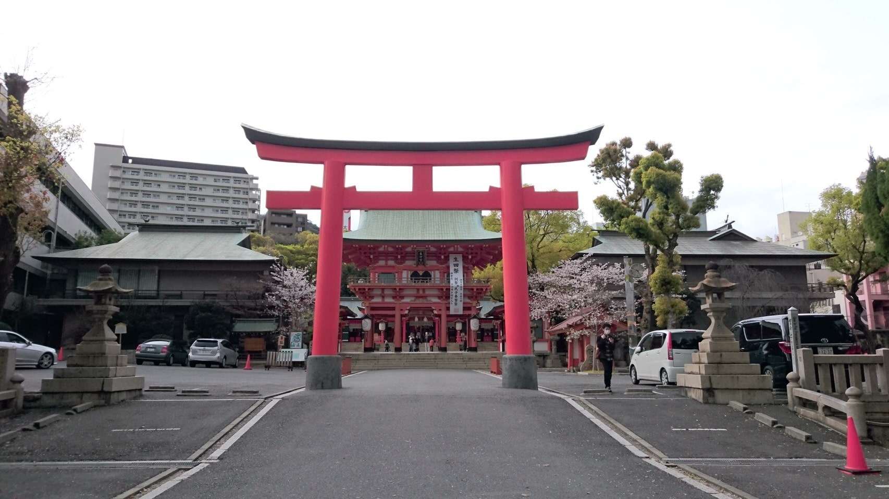

[概要] 紀元前3世紀に建立された日本最古級の神社！ [営業時間] 7:00開門、17:00閉門（夏場は18:00） [休業日] なし [アクセス] JR三ノ宮駅から徒歩10分 [その他] ご祈祷受付9:30~16:00
日本書紀にも記されとる神戸を代表する神社の一つ！縁結びの女神様がおるよ！！
140回生 女子
毎年初詣は生田神社！ 今年はどんな絵馬かなって楽しみになる。 屋台もいっぱい出ててわくわく。私は毎年りんご飴とからあげ買うよ！ ぜひお正月にお参りに来て欲しいけど、そうじゃなくても良い場所だと思う。
縁結びのパワースポットで有名な神社です。 連なった鳥居がとても神秘的でした！


140回生 女子
毎年初詣は生田神社！
今年はどんな絵馬かなって楽しみになる。
屋台もいっぱい出ててわくわく。私は毎年りんご飴とからあげ買うよ！
ぜひお正月にお参りに来て欲しいけど、そうじゃなくても良い場所だと思う。